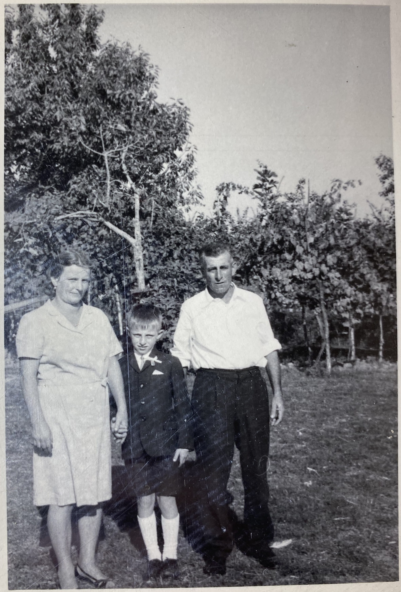
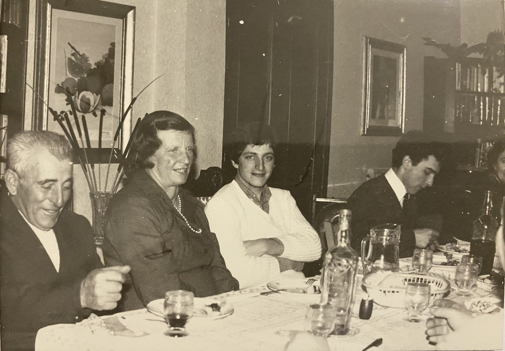
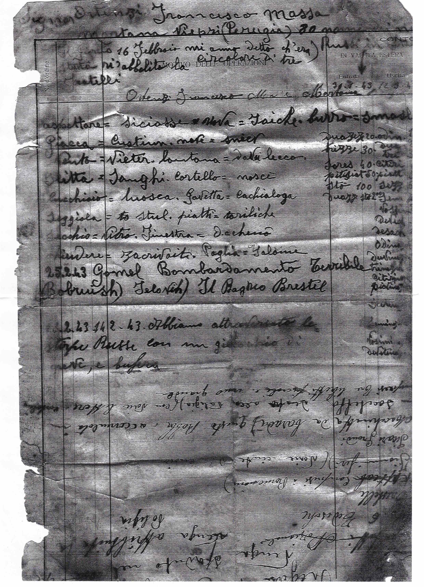
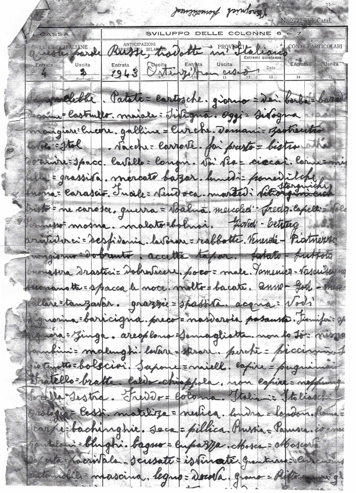
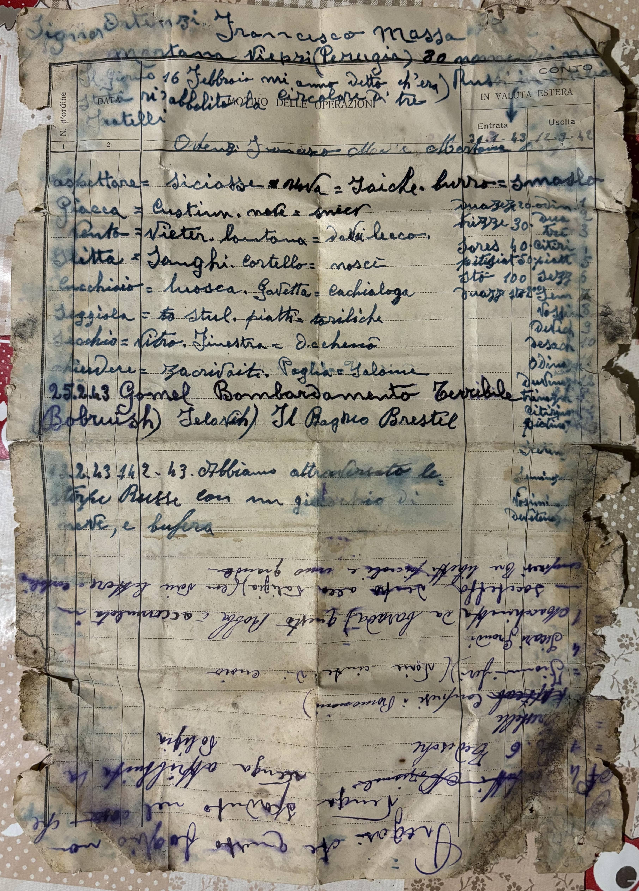
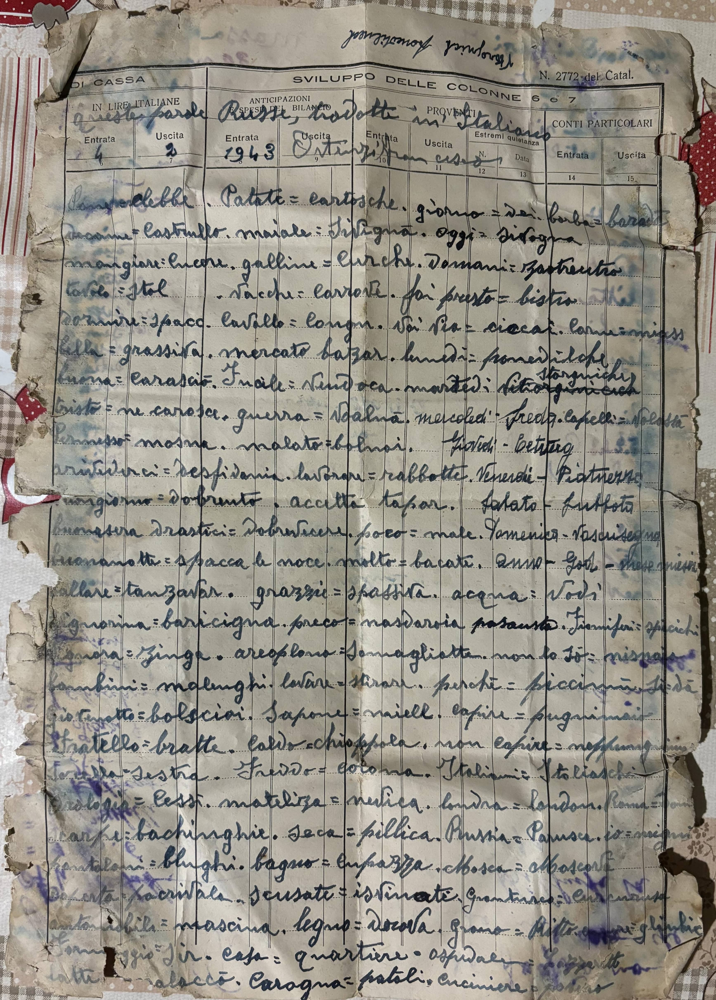
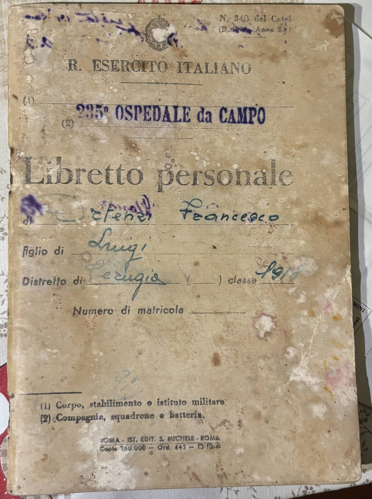
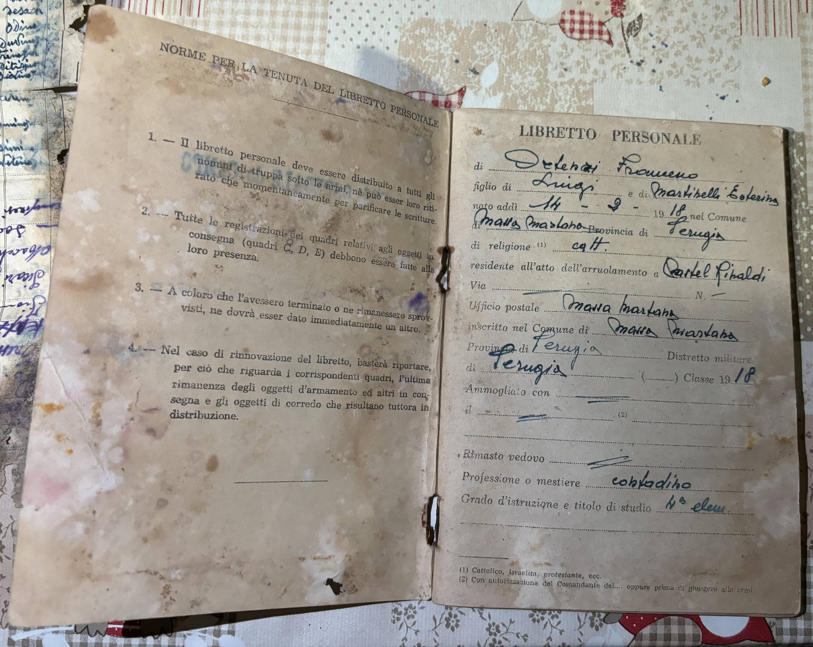
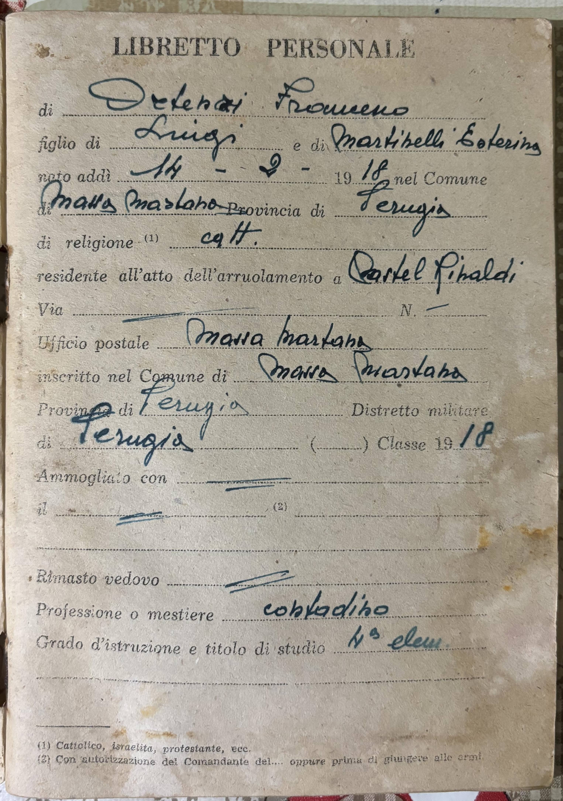
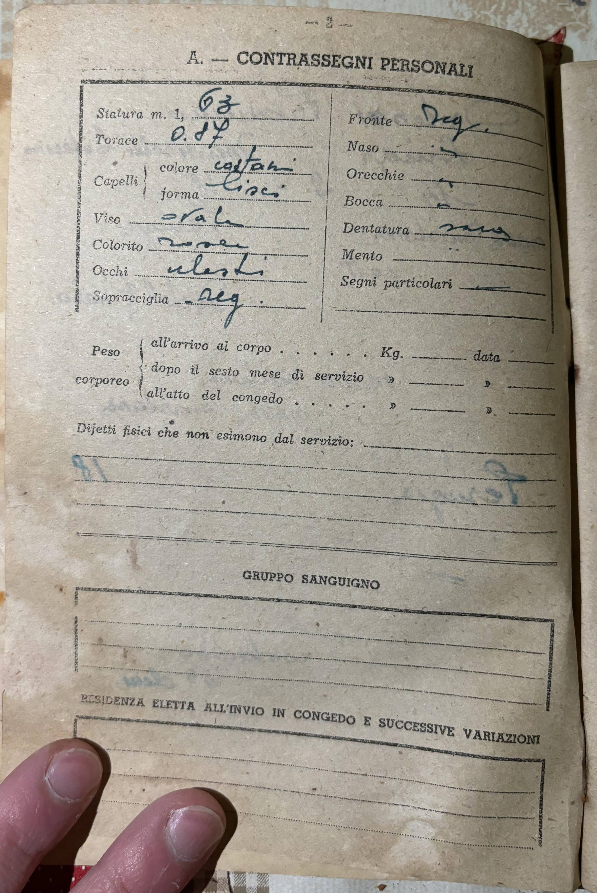

Ortenzi, Francesco
| Nome alla nascita | Ortenzi, Francesco |
| Genere | maschio |
| Età al decesso | 86 anni, 9 mesi |
Eventi
| Evento | Data | Luogo | Descrizione | Fonti |
|---|---|---|---|---|
| Servizio militare | stimata dal 1942 al 1943 | 235° Ospedale da Campo | 1a | |
|
|
||||
| Residenza | circa il 1943 | Viepri, Massa Martana, Umbria | 2a | |
|
|
||||
| Nascita | 14/2/1918 | Castelrinaldi, Massa Martana, Umbria | 3a 4a | |
|
|
||||
| Decesso | 14/11/2004 | San Gemini, Umbria | 3a | |
|
|
||||
| Sepoltura | Cappella di Famiglia Ortenzi Francesco, Cimitero di Terni, Terni, Umbria | |||
|
|
||||
Genitori
| Relazione con la persona principale | Nome | Data di nascita | Data del decesso | Relazione con questa famiglia (se non per nascita) |
|---|---|---|---|---|
| Padre | Ortenzi, Luigi | 1/11/1883 | 19/7/1963 | |
| Madre | Martinelli, Ester | 1893 | 18/1/1968 | |
| La sorella | Ortenzi, Amalia | 11/1913 | 12/12/1913 | |
| Il fratello | Ortenzi, Ademo | 7/7/1915 | 23/9/1943 | |
| Ortenzi, Francesco | 14/2/1918 | 14/11/2004 | ||
| Il fratello | Ortenzi, Edo | 21/4/1920 | stimata 30/10/1943 | |
| La sorella | Ortenzi, Amabilia | 1/6/1922 | 8/11/2008 |
Famiglie
Famiglia di Ortenzi, Francesco e Trovarelli, Dalida |
|||||||||||||||
| Sposati | Moglie | Trovarelli, Dalida ( * 14/7/1927 + 4/2024 ) | |||||||||||||
|
|||||||||||||||
| Figli | |||||||||||||||
| Nome | Data di nascita | Data del decesso |
|---|---|---|
| Ortenzi, Edda | 26/5/1949 | |
| Ortenzi, Osvaldo | 6/5/1955 | |
| Ortenzi, Luigino | 8/2/1961 |
Multimedia


×
❮
❯


1/14 - Francesco_Ortenzi_(senza_data)_a
2/14 - Francesco_Ortenzi_(senza_data)_b
3/14 - Francesco_Ortenzi_Dalida_Trovarelli_(senza_data)

4/14 - Ortenzi_Trovarelli_(senza_data)_a

6/14 - Dino_Trovarelli_Ortenzi_2001
7/14 - Diario Francesco_Ortenzi_1943_a

8/14 - Diario Francesco_Ortenzi_1943_b

9/14 - Diario_Francesco_Ortenzi_1943_a

10/14 - Diario_Francesco_Ortenzi_1943_b

11/14 - Libretto_personale_Francesco_Ortenzi_a

12/14 - Libretto_personale_Francesco_Ortenzi_b

13/14 - Libretto_personale_Francesco_Ortenzi_c

14/14 - Libretto_personale_Francesco_Ortenzi_d

Collegamenti web
| Tipo | Descrizione |
|---|---|
| FamilySearch |
Genealogia
Ascendenti


Riferimenti a fonti
-
Libretto personale di Francesco Ortenzi
-
- Data: stimata 1942
-
-
Diario di Francesco Ortenzi (1942-1943)
-
- Data: stimata tra 1942 e 1943
-
-
Aldilàpp - Terni
-
- Data: 2024
-
-
Atto di nascita di Francesco Ortenzi (1918)
-
- Data: 1918
-